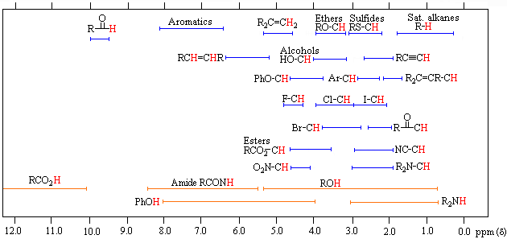
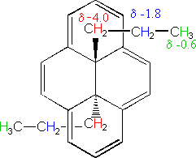
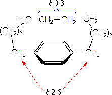

|
||
| *For samples in CDCl3 solution. The d scale is relative to TMS at d=0. | Organic Chemistry edvibe.co.ke |
|
|
|
|---|
 |
||
| *For samples in CDCl3 solution. The d scale is relative to TMS at d=0. | Organic Chemistry edvibe.co.ke |
|
The broad ranges shown at the bottom of the chart (orange color) are typical of hydrogen bonded protons (eg. OH and NH). These signals are concentration and temperature dependent. Note that in DMSO-d6 solution, alcohol OH signals are shifted to lower field (d 4.0 to 6.0ppm), and usually display vicinal coupling.
Inductive deshielding effects of electronegative substituents are roughly additive, as the following data suggests.
| Cpd./Sub. | X=Cl | X=Br | X=I | X=OR | X=SR |
|---|---|---|---|---|---|
| CH3X | 3.0 | 2.7 | 2.1 | 3.1 | 2.1 |
| CH2X2 | 5.3 | 5.0 | 3.9 | 4.8 | 3.8 |
| CHX3 | 7.3 | 7.0 | 5.7 | 5.2 |
Furthermore, the longer-range influence of such substituents is apparent (although diminished) in compounds such as CH3-CCl3, d = 2.72 ppm, and CH3-C(OR)3, d = 1.46 ppm.
Anisotropic effects are common in p-electron systems, and are often responsible for atypical chemical shifts. For example:
 |
 |
|
||
| *For samples in CDCl3 solution. The d scale is relative to TMS at d=0. | Organic Chemistry edvibe.co.ke |
|
Conjugation of a double bond with a carbonyl group perturbs the carbon resonances of both groups. The b-carbon of the double bond is shifted to lower field by 20 to 30 ppm, and the carbonyl carbon is shifted to higher field by 5 to 15 ppm.
Examples of the effect of multiple substituents on a carbon atom are shown in the following table. Halogen substitution effects are complex, with fluorine and chlorine generally shifting the carbon resonance to lower field, but iodine having an opposite influence.
| Cpd./Sub. | X=F | X=Cl | X=Br | X=I | X=OMe |
|---|---|---|---|---|---|
| CH3X | 75 | 25 | 10 | -21 | 60 |
| CH2X2 | 110 | 54 | 22 | -54 | 103 |
| CHX3 | 119 | 77.5 | 12 | -140 | 115 |
| CX4 | 94 | 97 | -29 | -293 | 121 |